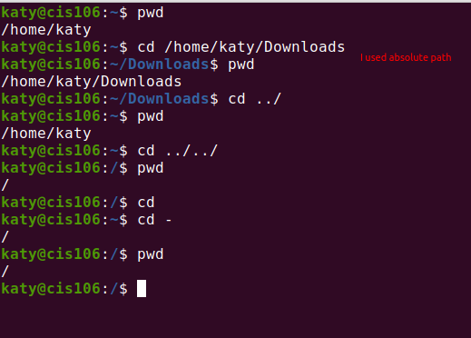
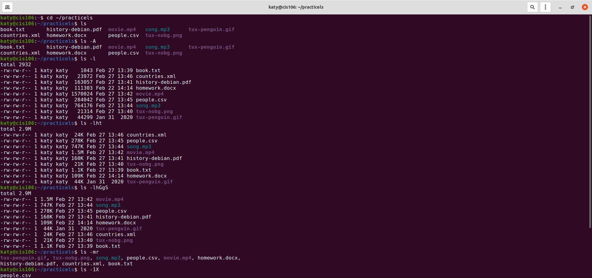
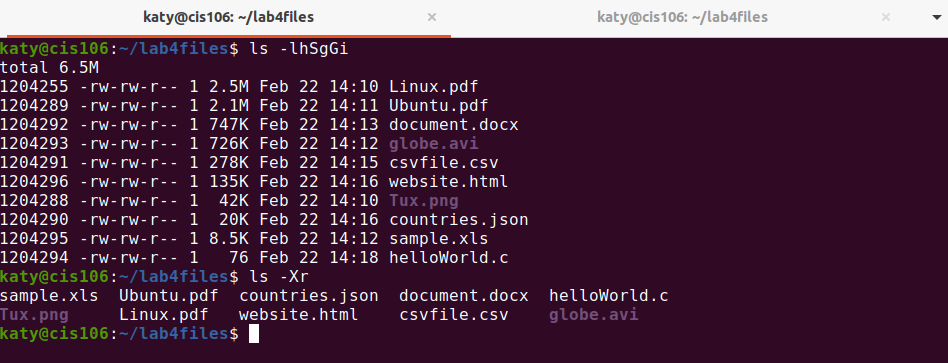
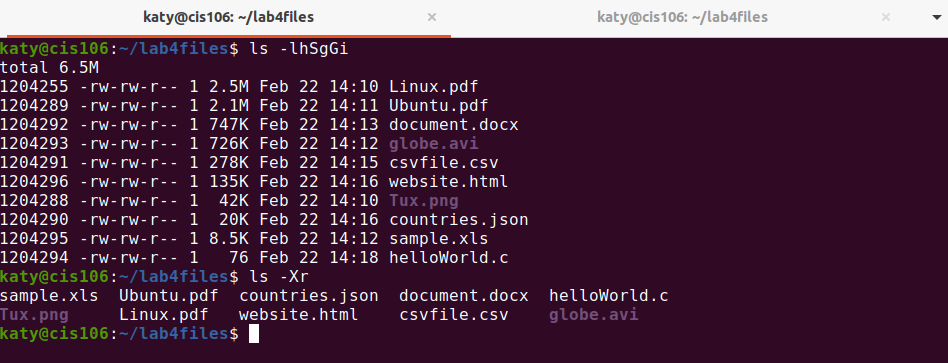
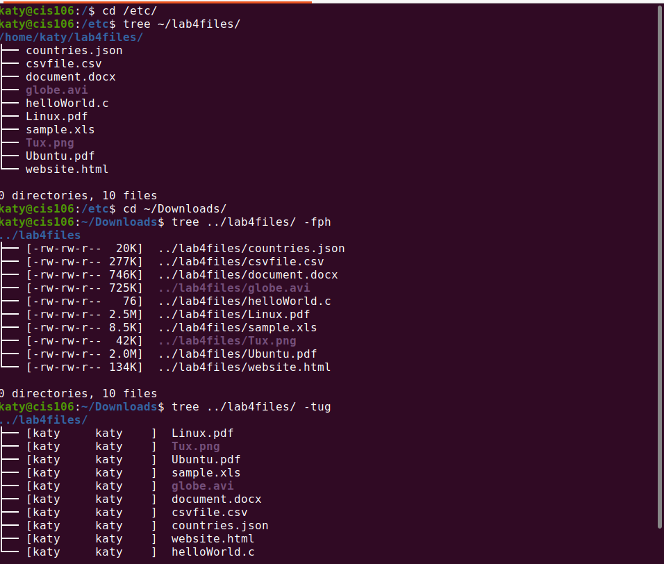

| Directory | Function |
|---|---|
| bin | it is a subdirectory of the root directory that contains executable programs which are essential for booting purposes and system repairment |
| dev | it contains special device files that control access to peripheral devices |
| etc | it contains all your system configuration in it. |
| home | it is a place where by default all user home directories are created.it contains the personal files of a particular user of the system . |
| media | Directory for mounting files systems on removable media like CD-ROM drives, floppy disks, and Zip drives. |
| opt | it is reserved for all the software and add-on packages that are not part of the default installation. |
| proc | A special directory in a virtual filesystem. It contains the information about various aspects of a Linux system. |
| srv | It holds site specific data to be served by the system for protocols such as, ftp, rsync, www, etc |
| usr | It is a secondary file hierarchy that contains shareable, read-only data. |
| var | It contains variable data files |
| Command | What it does | Syntax | Example |
|---|---|---|---|
| cd | used to change the current working directory | cd + Destination |
cd $HOME |
| pwd | displays the current working directory | pwd |
pwd |
| ls | displays all file inside a given directory /current working directory | ls+option+paths |
ls -a Downloads |


 

